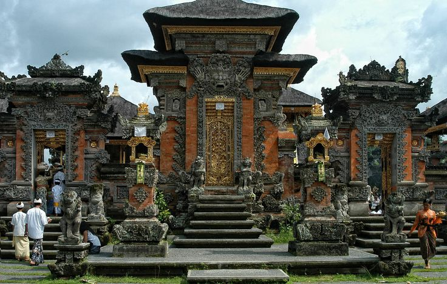
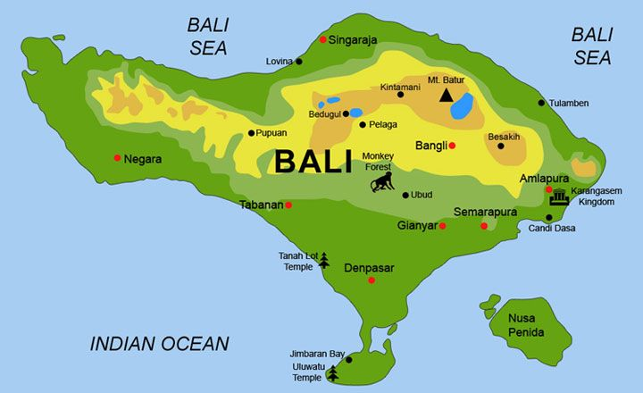

Sejarah

Nama Bali diperkirakan berasal dari kata Bali dalam bahasa Sansekerta yang berarti "persembahan" atau "sesajen". Sejarah Bali sangat erat kaitannya dengan berkembangnya agama Hindu Kerajaan Majapahit pada abad ke-14. Setelah keruntuhan Majapahit, banyak bangsawan, seniman, dan pemuka agama dari Jawa yang berpindah ke Bali, membawa serta kekayaan seni dan budaya Hindu-Jawa yang kemudian berakulturasi dengan tradisi lokal Bali hingga membentuk kebudayaan unik yang ada saat ini.
Geografis

Pulau Bali terletak di sebelah timur Pulau Jawa dan sebelah barat Pulau Lombok. Provinsi ini dikelilingi oleh Laut Bali di sebelah utara, Samudra Hindia di sebelah selatan, Selat Bali di sebelah barat, dan Selat Lombok di sebelah timur. Wilayah Bali dibelah oleh gugusan pegunungan dari barat ke timur, dengan puncak tertingginya yaitu Gunung Agung yang merupakan gunung berapi aktif.
Wilayah Bali juga dialiri oleh beberapa sungai utama seperti Sungai Ayung dan Sungai Unda. Selain pulau utama, Provinsi Bali juga mencakup beberapa pulau kecil di sekitarnya seperti Nusa Penida, Nusa Lembongan, dan Nusa Ceningan.
Wisata
Sejak berkembangnya sektor pariwisata internasional, Bali telah menjadi destinasi utama bagi wisatawan lokal maupun mancanegara untuk menikmati keindahan pantai, kebudayaannya yang kental, serta suasana alamnya yang asri. Selain menjadi pusat wisata budaya dan bahari, Bali juga dikenal dengan berbagai kawasan peristirahatan yang menawarkan arsitektur khas Bali dan pemandangan alam yang mempesona.
Pantai Kuta

Terletak di sebelah selatan Kota Denpasar, Pantai Kuta merupakan destinasi wisata pariwisata yang paling populer dan ramai dikunjungi. Dikenal dengan garis pantai pasir putihnya yang luas serta ombaknya yang cocok untuk aktivitas berselancar, pantai ini juga menjadi tempat terbaik untuk menikmati pemandangan matahari terbenam.
Ubud
.jpeg)
Berada di kawasan perbukitan Gianyar, Ubud dikenal sebagai pusat seni dan budaya Bali. Kawasan ini menawarkan pemandangan terasering sawah yang hijau, pertunjukan tari tradisional, serta berbagai galeri seni. Ubud menjadi tempat favorit bagi wisatawan yang mencari ketenangan, meditasi, dan keindahan alam khas pedesaan Bali.